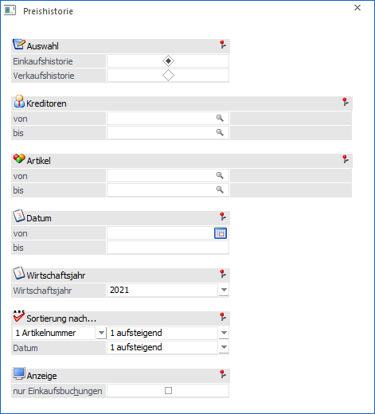
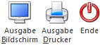

Im Menüpunkt…
1 WinLine FAKT
1 Auswertungen
1 Preishistorie
… kann eine Liste aller verwendeten Einkaufs- bzw. Verkaufspreise ausgegeben werden. Basis dieser Liste ist das Artikeljournal.

Ø Einkaufshistorie /Verkaufshistorie
Mit dieser Option kann entschieden werden, ob die Einkaufspreise (von Lieferanten) oder die Verkaufspreise (von Kunden) ausgewertet werden sollen.
Ø Debitoren von / bis bzw. Kreditoren von /bis
Je nachdem, welche Historien-Option gewählt wurde, können hier die Debitoren bzw. Kreditoren eingeschränkt werden, von denen die Preishistorie ausgewertet werden soll.
Ø Artikel von / bis
Einschränkung der Artikel die ausgewertet werden sollen.
Ø Datum von / bis
An dieser Stelle kann eine Eingrenzung nach dem Buchungsdatum vorgenommen werden.
Ø Wirtschaftsjahr
Über die Auswahlbox kann das Wirtschaftsjahr gewählt werden, für welches die Preishistorie ausgegeben werden soll.
Ø Sortieren nach x
Es kann entschieden werden, ob die Liste nach "1 - Artikelnummer" oder nach "2 - Kontonummer" sortiert werden soll. Zusätzlich kann entschieden werden, ob die Liste absteigend oder aufsteigend sortiert werden soll.
Ø Sortieren nach Datum
Hier kann definiert werden, in welcher Reihenfolge das Datum sortiert werden soll.
Ø Nur Einkaufsbuchungen
Diese Option steht nur bei der Einkaufshistorie zur Verfügung. Damit werden nur die Einkaufsbuchungen, das sind die Buchungen mit dem Buchungscode FL ausgewertet, andere Buchungen wir z.B. für Zugang (Buchungscode L) werden dabei nicht berücksichtigt.
Buttons

Ø Ausgabe Bildschirm
Mit Hilfe des Buttons "Ausgabe Bildschirm" oder der Taste F5 wird die Auswertung am Bildschirm ausgegeben.
Achtung
In der Preishistorie werden keine Stornozeilen (Zeilen welche durch das Editieren einer Faktura erzeugt werden) mehr ausgegeben, wenn im Artikeljournal der Button "Komprimieren" gedrückt wurde. Dadurch erhalten die Zeilen ein Stornokennzeichen und werden auch nicht mehr in der Preishistorie aufgeführt.
Ø Ausgabe Drucker
Durch Anwahl des Buttons "Ausgabe Drucker" wird die Auswertung am Drucker ausgegeben.
Achtung
In der Preishistorie werden keine Stornozeilen (Zeilen welche durch das Editieren einer Faktura erzeugt werden) mehr ausgegeben, wenn im Artikeljournal der Button "Komprimieren" gedrückt wurde. Dadurch erhalten die Zeilen ein Stornokennzeichen und werden auch nicht mehr in der Preishistorie aufgeführt.
Ø Ende
Durch Anwahl des Buttons "Ende" bzw. der Taste ESC wird die Auswertung geschlossen.